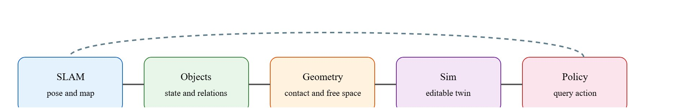

"Perception earns its keep when the next action gets safer, faster, or easier to debug."
A Patient Embodied AI Agent
This section assumes familiarity with coordinate frames and sensor-fusion concepts from section 4.1 and section 8.3. The SLAM memory format introduced here is taken further in section 29.5, which covers graph-based and visual SLAM in detail. The scene representations for manipulation are consumed directly by section 42.4, which shows how perception outputs feed pick-and-place and contact-rich pipelines, and the real2sim pipeline connects to the domain-randomization workflow in section 20.3.
This section teaches you to choose and connect the scene representations a robot uses for three jobs: SLAM (Simultaneous Localization And Mapping, building a map while tracking the robot's own pose), real2sim (turning a real-world capture into an editable simulation asset), and manipulation (grasping and contact). A warehouse robot scans a shelf, builds a 3D map, transfers that map into simulation overnight, trains a grasp policy, and deploys it the next morning on a real arm. That pipeline works only because every stage agrees on a scene representation: SLAM hands a consistent pose-and-map to the real2sim converter, the simulator produces editable geometry and realistic materials for policy training, and the manipulation module tracks per-object contact state across a grasp. Pick the wrong format at any seam and the whole chain breaks. Right now, neural scene representations are collapsing what once required three separate engineering stacks into a single differentiable representation, making this the pivotal skill for anyone building robots that act reliably in the physical world. You will implement each layer and wire them together end to end.
A warehouse arm reaches confidently into the spot where a box used to be, fingers closing on empty air, because the only scene model it trusted was a photoreal render captured ninety seconds and one pick ago. A static computer-vision system can stop when it names an object or produces a clean visualization; an embodied system cannot. The robot needs a representation that is tied to coordinates, uncertainty, latency, and an action interface, because a late or uncalibrated result can be more dangerous than no result at all.
For this section, the useful mental model is the perception-to-action contract. The perception module receives sensor evidence, estimates a compact state, exposes confidence and timing, and lets a planner or controller decide whether the next action is allowed. This is the bridge from coordinate frames and sensor estimation to the closed-loop evaluation discipline used in sim-to-real transfer.
A perception output is only embodied knowledge when it can change an admissible action, a recovery choice, or a safety margin. For a full treatment of this principle, see section 28.6. Here the same criterion is applied specifically to the handoff points between SLAM, real-to-sim transfer, and manipulation planning.
Figure 28.7.1 is the handoff diagram for scene representations in robotics: sensor evidence, geometric representation, uncertainty, latency, and action consumer each form a separate failure point. Figure 28.7.2 below then routes a single physical event through three concrete representations named there for the first time: an ESDF (Euclidean Signed Distance Field, a grid that stores at every point how far it is from the nearest obstacle so a planner can test free space cheaply) for collision checking, a scene graph for object relations, and a 3DGS (3D Gaussian Splatting, a scene representation that renders a photoreal view by blending many small colored, oriented blobs called Gaussians instead of a mesh or voxel grid) splat for visualization.

A robot scene memory is best viewed as a set of query functions, not a single universal format.
$\mathcal M=\{q_{\mathrm{pose}},q_{\mathrm{free}},q_{\mathrm{contact}},q_{\mathrm{object}},q_{\mathrm{render}}\}$
Different tasks ask different queries. A renderer asks for appearance, a planner asks for free space, a manipulator asks for contact geometry, and a language planner asks for object relations. A mature system routes each query to the representation that can answer it safely. (The worked miniature below shows this routing in a runnable form before the real2sim pipeline that depends on it is introduced, so read the code before the real2sim section that reuses its ESDF and scene-graph objects.)
So far: a scene memory is a set of separately owned query functions, not one file, so the design procedure is to list the downstream queries first, split safety-critical geometry from visualization-only memory, keep object state updateable after contact or occlusion, and track provenance back to the original capture; the table and analogy below make that split concrete before the worked example runs it end to end.
| Design Choice | Use When | Control Risk |
|---|---|---|
| Pose tracking | SLAM graph, visual-inertial odometry | Map inconsistency corrupts every downstream query. |
| Collision planning | Occupancy, Euclidean Signed Distance Field (ESDF), mesh, verified cloud | Rendering fields may be non-conservative. |
| Task reasoning | Object-centric scene graph | Relations can become stale after manipulation. |
| Visual replay | NeRF or 3DGS | Photorealism can hide missing control semantics. |
Think of a professional kitchen: the head chef keeps a whiteboard with table orders (task state), a posted floor plan showing which burners are hot (safety geometry), a live ticket rail with timing (freshness), and a plated-dish photo for reference (visual appearance). No single document serves all four purposes. Trying to run the kitchen from the photo alone would mean burning hands on burners that "look fine" in the image. A robot's scene memory works the same way: each query (where is free space? what does the scene look like? where is the object?) must go to the representation whose assumptions were designed for that specific question, not to whichever representation happens to look the most complete.
A common assumption is that a visually convincing neural scene representation (NeRF or 3DGS) can serve as the single source of truth for all robot tasks, including collision avoidance, grasp planning, and localization. This is wrong in an embodied context because photorealism optimizes for appearance, not geometric conservatism or physical correctness: a splat can render a shelf flawlessly while encoding surfaces that are 3-5 cm off in depth, omit the free-space guarantee that safety-critical planners require, and become stale the moment an object moves. The correct mental model treats scene representation as a routing problem: each query (free-space check, object pose, visual replay, sim export) must be dispatched to the representation whose assumptions were designed to meet the action contract for that query.
Routing each query to its proper owner is not academic. Walk through a single shelf capture and watch the representations diverge under one physical change. The routing table divides semantic labor across representations: a visually rich model can own operator rendering while collision checking and grasp planning still demand geometry with stricter safety meaning.
Take a concrete case. A warehouse mobile manipulator captures a 3-second RGB-D (color plus per-pixel depth, the standard output of a depth camera) sweep of a shelf. The visual-inertial odometry front-end (NVIDIA Isaac ROS Visual SLAM) reports camera pose to within 8 mm at 30 Hz. From the same sweep, the arm planner updates an ESDF at 5 Hz and 3 cm voxels for a conservative free-space buffer, while a 3DGS model trained offline on 200 reference images drives the 60 fps operator feed. Shift a box 15 cm after a pick and the ESDF converges in 200 ms, one sensor cycle; the splat keeps painting the old pose until a re-capture fires. The arm planner stays safe because it queries the ESDF, not the splat. Read pose from the splat instead and the planner inherits a 15 cm error until the next full scan, enough to collide on the next pick attempt.
# Scene-memory routing table: dispatch each robotics query to the right representation
import numpy as np
# Simulated scene state: each representation owns a subset of queries
class ESDFMap:
"""Conservative signed-distance field for collision checking."""
def __init__(self, voxel_res=0.03):
self.voxel_res = voxel_res
# Toy 3-D grid: positive = free, negative = occupied, zero = surface
self.grid = np.ones((20, 20, 10), dtype=np.float32) * 0.5
self.grid[8:12, 8:12, :] = -0.05 # box obstacle
def query_free(self, xyz):
ix = int(xyz[0] / self.voxel_res) % 20
iy = int(xyz[1] / self.voxel_res) % 20
iz = int(xyz[2] / self.voxel_res) % 10
dist = float(self.grid[ix, iy, iz])
return {"sdf": dist, "is_free": dist > 0.0, "rep": "ESDF"}
class SplatRenderer:
"""3D Gaussian splat stub: owns only the visual render query."""
def query_render(self, camera_pose):
# In a real system this would invoke the 3DGS rasterizer
return {"rep": "3DGS", "fps": 60, "note": "visualization only"}
class ObjectGraph:
"""Scene graph: owns object state and relations."""
def __init__(self):
self.objects = {
"box_A": {"pose": np.array([0.24, 0.24, 0.0]), "class": "box",
"grasped": False, "fresh": True},
}
def query_object(self, name):
obj = self.objects.get(name, {})
return {"rep": "SceneGraph", **obj}
def route_query(query_type, esdf, splat, graph, **kwargs):
"""Dispatch each robotics query to its owner representation."""
if query_type == "avoid_collision":
return esdf.query_free(kwargs["xyz"])
elif query_type == "render_operator_view":
return splat.query_render(kwargs.get("camera_pose"))
elif query_type == "plan_grasp":
return graph.query_object(kwargs["object_name"])
else:
raise ValueError(f"Unknown query: {query_type}")
# Build the scene memory stack
esdf = ESDFMap(voxel_res=0.03)
splat = SplatRenderer()
graph = ObjectGraph()
# Three different consumers ask three different questions
queries = [
("avoid_collision", {"xyz": np.array([0.24, 0.24, 0.0])}),
("render_operator_view", {"camera_pose": np.eye(4)}),
("plan_grasp", {"object_name": "box_A"}),
]
for q_type, q_args in queries:
result = route_query(q_type, esdf, splat, graph, **q_args)
print(f"{q_type:25s} -> rep={result['rep']:12s} result={result}")avoid_collision -> rep=ESDF result={'sdf': -0.05, 'is_free': False, 'rep': 'ESDF'}
render_operator_view -> rep=3DGS result={'rep': '3DGS', 'fps': 60, 'note': 'visualization only'}
plan_grasp -> rep=SceneGraph result={'rep': 'SceneGraph', 'pose': array([0.24, 0.24, 0. ]), 'class': 'box', 'grasped': False, 'fresh': True}Note what plan_grasp actually returns: the object's pose, class, and a grasped flag, not a full mesh. A grasp planner consumes that record by combining it with the ESDF's local geometry around the object's pose to select a contact point and approach direction, then flips grasped to True and marks the record stale for any other consumer once the gripper closes. This is the concrete mechanism by which "manipulation" in this section's title is implemented: contact state lives in the scene graph, contact geometry is borrowed from the ESDF at query time, and the two are never merged into one file.
ROS 2, SLAM systems, Open3D, Nerfstudio, and simulator import pipelines already provide pieces of this routing. The engineering task is to keep provenance, timestamps, frame transforms, and query ownership explicit.
Trace the routing logic with concrete numbers. The shelf is mapped at 3 cm voxels. Box A starts at world position (0.24, 0.24, 0.0) m, occupying ESDF voxels [8:12, 8:12, :], which hold signed distance -0.05 (occupied). A pick shifts the box +15 cm in x, to (0.39, 0.39, 0.0).
t = 0 ms (just after the shift): The planner asks q_free(0.24, 0.24, 0.0) at the OLD location. Voxel index = floor(0.24 / 0.03) = 8, so it reads grid[8, 8, 0] = -0.05 -> is_free = False. The ESDF still believes the box is there. Meanwhile q_free(0.39, 0.39, 0.0) = floor(0.39/0.03) = 13, reads grid[13, 13, 0] = +0.5 -> is_free = True. The new location reads as free space (wrong, but not yet corrected).
t = 200 ms (one sensor cycle, ESDF re-integrated): The depth sweep clears the old voxels (grid[8:12, 8:12, :] -> +0.5) and marks the new ones (grid[13:17, 13:17, :] -> -0.05). Now q_free(0.39, 0.39, 0.0) = grid[13,13,0] = -0.05 -> is_free = False. The planner correctly avoids the box at its new pose.
The splat, same moment: q_render() still returns the 60 fps view trained on the pre-pick images. It paints the box at (0.24, 0.24). A grasp planner that read object pose from the splat would reach for empty space at the old location and miss by the full 15 cm, while the ESDF-driven collision check has already been correct for 0 ms of staleness at the new pose. This is exactly why the routing table sends collision queries to the ESDF and only the operator view to the splat.
A real2sim scene that looks correct can still be physically wrong if mass, friction, joint limits, collision geometry, or object poses are not audited.
Routing queries to the right live representation keeps a deployed robot safe. The same discipline decides whether a robot can be trained at all, which is where real2sim transfer enters the pipeline. Real2sim transfer matters because a hand-crafted simulator forces you to specify every object geometry, mass, and friction by hand. On a real shelf with dozens of novel products, that is not feasible. Without real2sim, adding one novel product to the training set typically costs on the order of several hours of a roboticist's time to model manually in CAD, depending on shape complexity and the fidelity required; with a real2sim pipeline, the same object enters simulation from a 3-second RGB-D sweep. Without real2sim, the policy trains on geometry that does not match the physical object, and sim-to-real transfer fails at contact: the simulated grasp succeeds while the physical grasp slips or misses entirely. A policy trained on geometry that does not match the physical world is not a manipulation policy: it is a fiction that performs well only in the simulator that invented it.
The transfer works in three steps. First, export the SLAM-registered point cloud or mesh to a collision-ready format: OBJ (a plain-text mesh format most simulators can import directly) or USD (Universal Scene Description, Pixar's format for composing geometry, materials, and physics properties into one editable scene). Second, attach physical properties as metadata: mass from a scale reading, friction from a slip test. Third, a simulator importer (MuJoCo's obj2mjcf or Isaac Sim's USD pipeline) instantiates the scene and replaces default parameters with the measured values. The scene now carries geometry and dynamics anchored to a specific real-world capture.
When exporting a scanned mesh into MuJoCo via the obj2mjcf tool, the auto-generated geom elements default to conaffinity="1" and condim="3", which enables friction but uses the global friction value (0.5, 0.005, 0.0001) rather than any measured value. Before running any grasp policy, override the friction attribute on each object geom with values measured from a physical slip test; in practice, a friction-coefficient error on the order of 20% is often enough to flip a stable grasp to a slip in simulation for smooth or lightweight objects, though the exact threshold depends on grasp geometry and object mass. In Isaac Sim, the equivalent parameter lives under the PhysicsMaterialAPI prim as staticFriction and dynamicFriction: the default 0.5/0.5 is rarely correct for smooth plastic or metal objects encountered in real warehouses.
Neural fields (NeRF, 3DGS) are baked at capture time and do not update as the robot acts. If SLAM accumulates drift or a loop-closure correction (a one-time map fix applied when the robot recognizes a previously visited location and snaps its accumulated pose estimate back into consistency) shifts the map by even 2-3 cm, the neural field's coordinate frame is now misaligned with the live SLAM frame. Any planner or grasp system that reads object positions from the neural field will act on stale, offset geometry. The fix is to store neural field assets with the SLAM keyframe graph (the sparse set of past camera poses and their observed landmarks that the SLAM system keeps in memory to detect and correct loop closures) and re-anchor or re-render when a loop closure fires. Systems that skip this step frequently pass visual QA (the rendered image still looks correct) but fail contact-level tasks.
A Boston Dynamics style inspection robot might use visual-inertial SLAM for pose, an ESDF for safe footstep or body clearance, object memory for task state, and splats or NeRFs for operator visualization.
Publicly described warehouse manipulation cells such as Amazon's Sparrow are reported to follow this general split: a calibrated depth and SLAM front-end localizes the tote and items, a conservative collision-and-grasp geometry layer plans the arm motion, and an object-state model tracks which item was picked, reducing (rather than fully eliminating) the risk of double-grasping. The visual model used for monitoring and operator review is deliberately kept separate from the geometry that gates the arm, so a stale or photogenic render can never authorize an unsafe motion.
For Scene representations for robotics: SLAM, real2sim, manipulation, the perception result must answer what action changed, what uncertainty changed, and what log would reproduce the decision. Otherwise the output is still visualization, not embodied evidence.
Evaluate each representation inside the same action loop that will consume it, logging the sensor stream, calibration version, frame transform, and failure label so the comparison is construct-matched. For the full debugging protocol, see section 28.6. The key addition for multi-representation systems is verifying that the routing table itself is logged: when a query is dispatched to the wrong owner (for example, a grasp planner reading from a splat rather than the ESDF), the failure label must capture the mis-route, not just the downstream contact error.
Direction 1: Language-conditioned scene graphs for manipulation planning. Rather than hand-crafting object relations, 2024-2025 work grounds scene graphs directly in vision-language models (VLMs). RoboPoint (Yuan et al., NeurIPS 2024) and SpatialBot (2024) show that a VLM queried with a natural-language task can emit spatial affordance maps (per-pixel or per-region labels marking where an action such as "place" or "grasp" is physically valid, rather than just what object is present) that update the scene graph in-place, letting a planner ask "where do I place the mug?" without a separate spatial reasoning module. The open challenge is keeping these graphs consistent under partial occlusion and after contact events.
Direction 2: Gaussian splatting as a live, editable simulation asset. PhysGaussian (Xuan Li et al., CVPR 2024) and GaussianWorld (2025) extend 3DGS by attaching material and mass parameters to each Gaussian, so the splat can be directly simulated under physics without mesh conversion. This collapses the real2sim pipeline from three steps (scan, mesh, import) to one, but current methods break down for thin structures and articulated objects whose part boundaries the Gaussians do not respect.
Direction 3: Contact-informed neural reconstruction for sub-millimeter grasping. Tactile feedback is being used to refine neural geometry in real time. The Touch-GS work (Swann et al., 2024, RSS) fuses GelSight tactile readings with 3DGS to tighten surface estimates from 3-5 mm RGB-D error to under 0.5 mm in contact regions, enabling precision tasks such as peg-in-hole at tolerances current vision-only reconstructions cannot reach.
Open problem for PhD research: None of the above systems maintain a single coherent representation that is simultaneously safe for collision avoidance (conservative ESDF), fast enough for 30 Hz re-planning (splat rasterizer), and precise enough for contact-rich manipulation (sub-mm SDF). The open problem is designing a principled query-routing architecture that keeps these three representations synchronized under asynchronous updates from SLAM loop closures, manipulation contact events, and language-driven scene-graph edits, while providing provable freshness and safety guarantees to each downstream consumer.
Beginner (weekend): SLAM-to-MuJoCo shelf scene. Use a ROS 2 SLAM toolbox to map a small tabletop area with a depth camera, export the registered point cloud to OBJ with Open3D, then import it into MuJoCo using obj2mjcf and drop a Gymnasium environment on top so you can teleoperate a simulated arm over the real geometry. The key challenge is getting the coordinate frame and scale consistent between the ROS map frame and MuJoCo's world frame without manual tuning.
Intermediate (1-2 weeks): Real2sim grasp policy with domain-randomized friction. Scan five household objects with an RGB-D camera, transfer their meshes into Isaac Lab via the USD pipeline, measure physical friction coefficients with a simple tilt test, and train a LeRobot diffusion policy that randomizes friction within measured bounds. The key challenge is auditing each simulated geom's PhysicsMaterialAPI parameters so the trained policy's contact assumptions actually match the physical objects at deployment.
Chapter 29 takes scene representation one step further into simultaneous localization and mapping, where the robot must build and use the same map at the same time while its own pose remains uncertain.
NVIDIA. Isaac ROS Visual SLAM documentation. https://nvidia-isaac-ros.github.io/repositories_and_packages/isaac_ros_visual_slam/index.html
Practical visual-inertial odometry component for robotics navigation.
Nerfstudio documentation. https://docs.nerf.studio/
Maintained framework for neural scene representations used in real2sim and visualization workflows.
Open3D. Geometry and pipelines documentation. https://www.open3d.org/docs/release/
Practical geometry processing reference for robotics scene memory.
Can you name the representation, the consuming action, the uncertainty or freshness field, and the failure label for Scene representations for robotics: SLAM, real2sim, manipulation? If any one is missing, the section is not yet ready for a robot replay log.
There is no universal scene representation for robotics. Strong systems route each query to the representation whose assumptions match the action and risk.
Goal: Feel the difference between a visualization-only representation and a safety-geometry representation by measuring how each responds when an object moves between captures.
Tools needed: Python with Open3D (pip install open3d numpy) and a depth camera or any RGB-D dataset with two frames where one object has moved (the Redwood or TUM RGB-D sequences work, or capture two frames yourself with a RealSense or even a phone LiDAR app).
Steps: (1) Load frame A, back-project the depth image into a point cloud, and voxelize it with open3d.geometry.VoxelGrid.create_from_point_cloud at 3 cm resolution. This is your occupancy grid. (2) Pick a 3D query point on the moved object and check whether its voxel is occupied. (3) Render frame A's point cloud as your "visual" representation and note the object's apparent location. (4) Now load frame B (object moved). Re-voxelize to get a fresh occupancy grid, but keep displaying frame A's render as the stale visual. (5) Query the same world point in both: the fresh grid reports the new occupancy, the stale render still shows the old pose.
What to vary: voxel resolution (1 cm vs 3 cm vs 10 cm), how far the object moves (2 cm vs 15 cm), and the delay between which frame feeds the grid versus the render.
What to observe: the smallest displacement that flips a query voxel from free to occupied at each resolution, and the gap in centimeters between where the stale render places the object and where the fresh grid says it is. That gap is exactly the error a planner would inherit if it read geometry from the visual model instead of routing collision queries to the occupancy grid.
Design a scene-memory stack for a mobile manipulator in a kitchen. Assign separate representations for localization, collision checking, object reasoning, visual replay, and simulation export.
Continue to Chapter 29: Localization and Mapping (SLAM), where this contract becomes the input to the next embodied capability.